EJB部署记录
环境使用的是Glassfish5+Myeclipse。其中Myeclipse的版本是2018.8.0。
安装Glassfish的部分略过，安装说明安装即可。
- 首先创建项目。
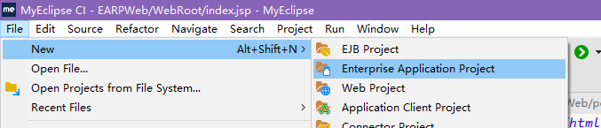
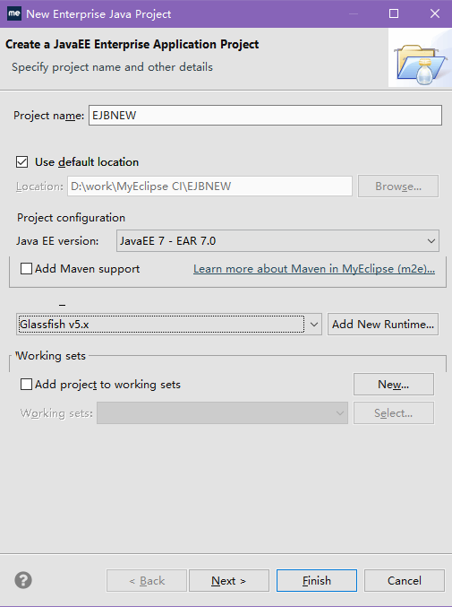
- 新建模块，只创建EJB模块和Web模块，然后点击Finish：
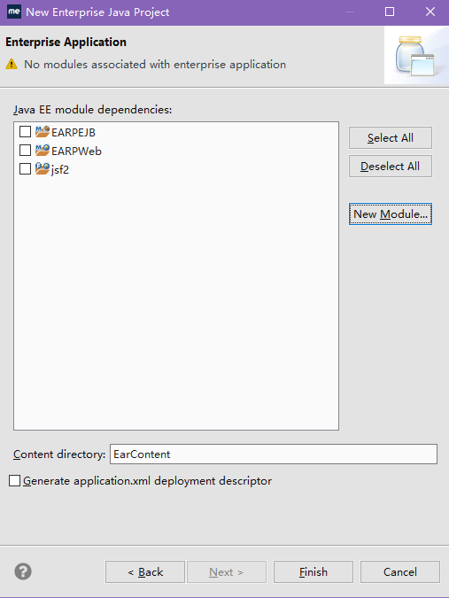
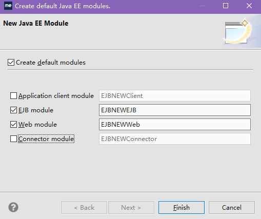
然后回到EAR项目创建界面，一路next并finish。
- 在生成的EJBNEWEJB模块中加入实验使用的Bean和接口。
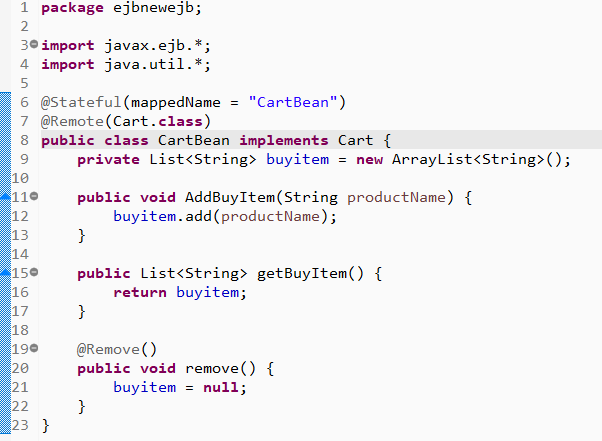
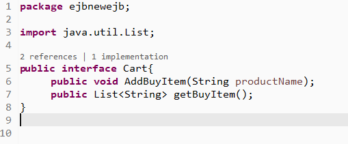
- 在EJBNEWWeb的属性中加入模块(Properties->Deployment-> Deployment Assembly)：
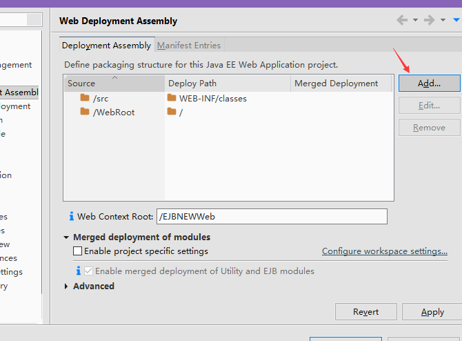
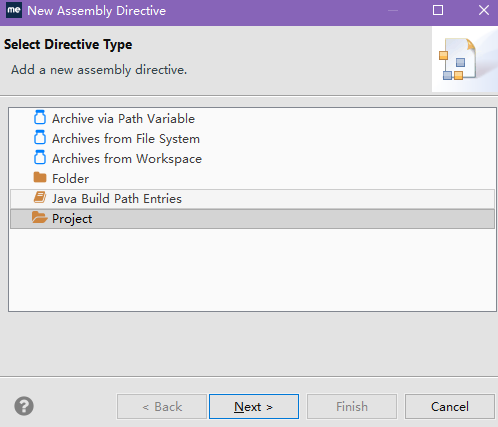
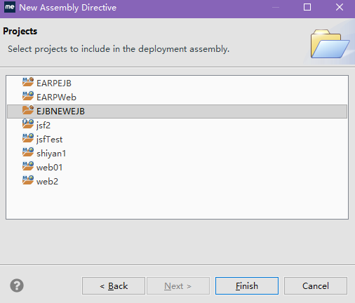
- Finish后回到属性，Apply。然后将index.jsp修改为如下：
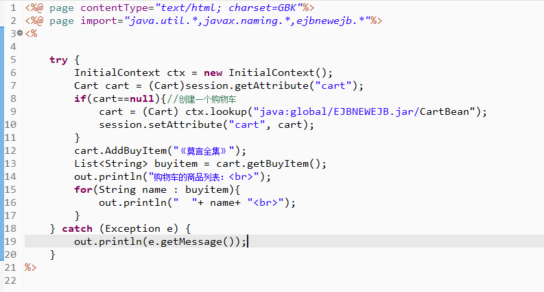
- 将项目加入Glassfish服务器的运行列表并运行index.jsp。可以看到页面成功加载，部署成功。
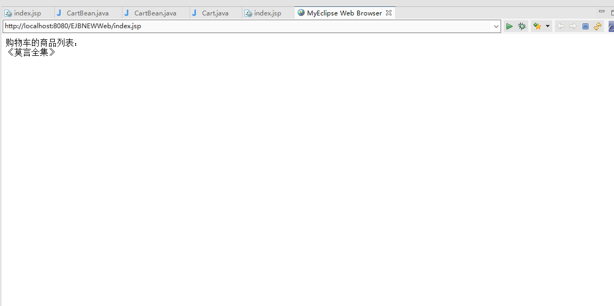
Comments